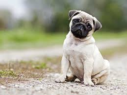

Dog activites
top all breadsToday, some dogs are used as pets, others are used to help humans do their work. They are a popular pet because they are usually playful, friendly, loyal and listen to humans. Thirty million dogs in the United States are registered as pets.[5] Dogs eat both meat and vegetables, often mixed together and sold in stores as dog food. Dogs often have jobs, including as police dogs, army dogs, assistance dogs, fire dogs, messenger dogs, hunting dogs, herding dogs, or rescue dogs. They are sometimes called "canines" from the Latin word for dog - canis. Sometimes people also use "dog" to describe other canids, such as wolves. A baby dog is called a pup or puppy. A dog is called a puppy until it is about one year old.[6] Dogs are sometimes referred to as "man's best friend" because they are kept as domestic pets and are usually loyal and like being around humans. Dogs like to be petted, but only when they can first see the petter's hand before petting; one should never pet a dog from behind. August 26 is National Dog Day.[7] While March 26 is National Puppy Day
my Dog
Dogs have four legs and make a "bark," "woof," or "arf" sound. Dogs often chase cats, and most dogs will fetch a ball or stick. Dogs can smell and hear better than humans, but cannot see well in color because they are color blind. Due to the anatomy of the eye, dogs can see better in dim light than humans. They also have a wider field of vision. Like wolves, wild dogs travel in groups called packs. Packs of dogs are ordered by rank, and dogs with low rank will submit to other dogs with higher rank. The highest ranked dog is called the alpha male. A dog in a group helps and cares for others. Domesticated dogs often view their owner as the alpha male.